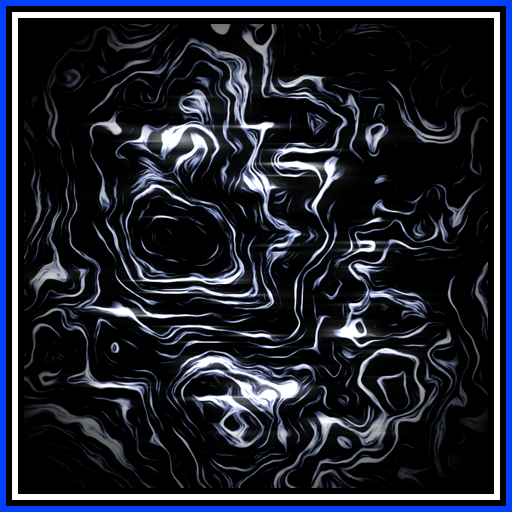

THE HAZE
A realm that contains the concepts and ideas of certain realities as energy. With the human world (Magnatic Realm), the thoughts and identities of people are recorded, being preserved even after death. However, these records will quickly fade away if not they are not retained by special intervention.
The Haze also acts as a gateway between realities, but only in certain situations. One of these is a reality suffering a catastrophic failure, if the laws of the reality are somehow violated. The Haze descends upon it and relocates the violator(s) to another reality, one capable of hosting them. During relocation, lingering concepts or thoughts may latch onto the violators and alter them as they enter the new reality.
Simply being within the Haze is dangerous, as both the metaphysical and physical body will erode. There are also specific conditions that allow one to resist this process, such as special intervention which was mentioned earlier. The intervention can be caused either by special procedures performed in one’s original world, or by being intercepted by other survivors in the Haze before complete dissolution, in which one can be reconstructed.
Living humans of the Magnatic Realm who are able to perceive the Haze are known as the Faceless. They are identical to regular humans, but once dead, memories of them among normal people begin to disappear. On the other hand, their last recorded consciousness in the Haze has a longer lifespan and a much higher chance of resisting erasure. Becoming Faceless results from long-term exposure to phenomena originating from different realities, as these phenomena contain energy from the Haze during relocation.
Humans that not only perceive the Haze, but are also able to directly interact with it are known as the Heartless. Upon becoming one, they undergo a radical personality change. This shift is severe enough that people who knew them previously perceive them as an entirely different individual, and are completely unable to recognize them as who they were before. The only ones who can are the other Heartless. To become one, you need to be dying while directly perceiving both your reality and the Haze simultaneously. The chance of succeeding over death is extremely slim.
Beings from the Asteric Realm who were relocated to the Magnatic Realm are known as the Soulless. In their original reality, they were unable to interact with the Haze, and only after relocation did they gain sapience and perception of that realm. In addition, each one gained a different gift in accordance to their new bodies, elevating their abilities far beyond the human limit. In exchange however, their bodies have an abysmally short lifespan and they lose all access to the Haze upon death. To avoid death, they must either all return to their original reality or find a way to exist within the Magnatic Realm's rules. Most of the Soulless opted to go back, but one of them refused.